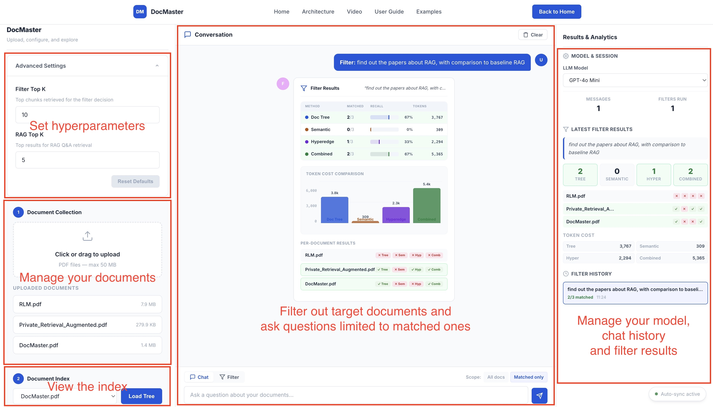

DocMaster makes it easy to filter and analyze large document collections using natural language. Follow these five simple steps to go from raw documents to intelligent insights.
The DocMaster web interface: users can issue natural-language filter queries, explore the document-tree index, tune hyperparameters, and compare filtering results side by side.

Each step builds on the last. You can complete the entire workflow in under a minute.
Head to the live demo and drag-and-drop your documents into the upload area. DocMaster will automatically parse each document, extract its structure, and build a semantic index — all in the background.
Select any uploaded document from the dropdown in the left panel and click Load Tree. The interactive tree viewer reveals how DocMaster understands your document's hierarchy.
In the right panel, describe what you're looking for in plain English. Think of it as asking: "Which of my documents match this description?"
Click Filter All Documents and watch the system evaluate each document using three complementary strategies: Document Tree traversal, Hyperedge search, and a Combined approach.
The results panel shows you exactly which documents matched — and how they matched. Three summary cards display match counts per strategy, followed by a detailed per-document breakdown.
Now that you've identified relevant documents, use the built-in chat to ask follow-up questions. DocMaster retrieves the most relevant passages and generates answers with source citations.
Fine-tune the system via the collapsible settings panel on the demo page. Most users won't need to change these.
Controls how many top chunks are retrieved to make the filter decision. Higher values provide more evidence but use more LLM tokens. Default: 10.
Controls how many passages are retrieved for Q&A answers. Higher values give broader context. Default: 5.
Upload your first document and experience DocMaster's filtering and Q&A in action.
Try the Live Demo